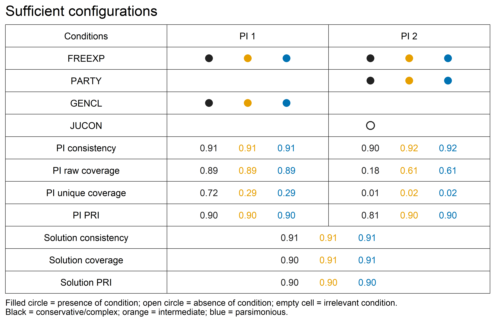

vdem_cluster_region_pol_labels <- c(
"Eastern Europe and Central Asia",
"Latin America and the Caribbean",
"Middle East and North Africa",
"Sub-Saharan Africa",
"Western Europe and North America",
"Asia and Pacific"
)
vdem_cluster_region_data <- vdem_calib
vdem_cluster_region_data$region_pol <- factor(
vdem_raw$region_pol,
levels = 1:6,
labels = vdem_cluster_region_pol_labels
)
table(vdem_cluster_region_data$region_pol)
#>
#> Eastern Europe and Central Asia Latin America and the Caribbean Middle East and North Africa Sub-Saharan Africa Western Europe and North America Asia and Pacific
#> 3 3 6 40 0 1411 Cluster Heterogeneity
Suppose your cases belong to substantively meaningful groups like regions, periods, institutional settings, or some other division warranted by the research design. Does a sufficient relation identified in the (pooled) baseline analysis display similar parameters of fit in each of those groups, or does its empirical performance depend heavily on where it is evaluated?
cluster.test() addresses this empirical dread while holding the baseline solution formula fixed. It does not construct and minimize a separate truth table for every cluster. Instead, it minimizes the supplied baseline truth table, obtains the membership of every case in the selected solution formula and its prime implicants, and recalculates their parameters of fit among the cases belonging to each group. This distinction is the heart of the diagnostic, because we are examining the heterogeneity of one pooled set relation, not searching for a different causal recipe inside every region.
The first application returns to the 66-country V-Dem cross-section and uses a custom regional grouping derived from V-Dem’s finer geographic categories. We will use this country-year panel to compare the baseline relation across five annual clusters and, because the same countries appear in every year, introduces the optional unit-specific output, which calculates one consistency and coverage value from each country’s five observations.
11.1 Following One Baseline Set Relation Across Groups
The supplied baseline truth table remains the analytical starting point, for it fixes the calibrated outcome and condition sets, the frequency and inclusion cutoffs, and the outcome assignments used in minimization. From that pooled analysis, cluster.test() selects the requested solution formula. If the formula contains several prime implicants, the function retains the membership of each prime implicant as well as membership in their fuzzy union.
If you are reading this book, you are probably familiar with (versions of) the consistency and coverage formulas for sufficiency below. Still, let’s go over them once more as a refresher.
Let \(S_i\) denote case \(i\)’s membership in the complete solution and \(Y_i\) its membership in the outcome. The two solution-level parameters of fit are:
\[ \operatorname{Cons}_{S \subseteq Y} = \frac{\sum_i \min(S_i,Y_i)}{\sum_i S_i}, \qquad \operatorname{Cov}_{S \subseteq Y} = \frac{\sum_i \min(S_i,Y_i)}{\sum_i Y_i}. \]
If consistency of sufficiency evaluates the degree to which membership in the solution is contained within outcome membership; solution coverage checks how much outcome membership is covered by the fuzzy union of the sufficient terms. When one prime implicant is evaluated separately, the corresponding coverage is its raw coverage: overlap with the other prime implicants is not removed.
In this chapter, the same quantities are calculated over different collections of observations:
Baseline parameters of fit use every eligible observation and serve as the common reference.
Cluster-specific parameters of fit restrict the sums in the numerator and denominator to the observations in one cluster, while keeping the baseline expression unchanged.
Unit-specific parameters of fit restrict those sums to all observations belonging to one unit across more than one cluster. The resulting consistency and coverage values summarize that collection of observations; they do not show how the relation changes from one cluster to the next.
The differences reported by the function are always calculated against the baseline parameter. For example, delta_consistency is the cluster- or unit-specific consistency minus pooled baseline consistency. A negative value therefore means that the selected expression is less consistent with sufficiency in that cluster or unit; a positive value means that it is more consistent there.
delta_coverage follows the same direction, but whenever the output reports a maximum absolute difference, the sign is removed and the value identifies the largest departure from the pooled fit regardless of direction. The detailed comparison must then be inspected to determine whether that departure is upward or downward.
As descriptive set-theoretic comparisons, the calculations show how far the consistency and coverage of the fixed baseline solution formula and its prime implicants vary across clusters relative to their pooled values. The researcher can then decide whether particular prime implicants, cases, or group definitions require closer examination.
In other words, we are not estimating panel effects or conducting a statistical test of group differences. We are evaluating whether one baseline sufficient expression displays comparable consistency and coverage across substantively defined empirical scopes. The calculation is numerical, as QCA parameters of fit necessarily are, but its logic, object, and inferential scope remain set-theoretic and descriptive.
In the following examples, the appraisal neither resolves the dependence created by repeated country-years nor establishes that a particular year or country causes the observed difference. It certainly does not show that a difference of, say,
0.20is statistically significant, nor does it warrant generalization beyond the observed case universe.
11.2 Preparing a Substantively Meaningful Grouping
It goes without saying that the grouping variable should divide the cases in a way that matters for the research question and design as a whole. But, of course, the CCMs police will not raid your office if you check a few clusters inductively out of curiosity. Who knows? You might even raise some interesting questions for further analysis.
Here, “region” is plausible because the baseline pooled relation may operate against different political histories and institutional environments across broad parts of the world. That does not mean, however, that the first regional variable offered by the dataset must be accepted without examining how it divides the cases actually included in the analysis.
V-Dem’s region_pol classification combines geographical proximity with regional traditions in democratization research, whereas region_geo uses nineteen categories defined from geographical location alone (Coppedge et al. 2025). Both were retained when the reference data were prepared. We will begin by preserving the six region_pol categories exactly as supplied, adding their labels and examining how they divide the 66 countries:
In the restricted case universe, the original classification leaves Western Europe and North America empty, assigns 40 of the 66 countries to Sub-Saharan Africa and another 14 to Asia and the Pacific, but only three to Latin America and the Caribbean. The three countries assigned to “Eastern Europe and Central Asia” are Kyrgyzstan, Tajikistan, and Uzbekistan, so the category contains Central Asia but no Eastern Europe at all. Moreover, the fourteen-country Asian and Pacific cluster places South Asian countries such as India and Pakistan alongside North Korea, Southeast Asian countries, and Pacific island states.
region_pol is therefore a poor analytical grouping for this particular population, and merely renaming its categories would conceal the problem because the underlying allocation of countries would remain unchanged.
Conversely, the finer region_geo classification gives us better building blocks for the present analysis. We can start by combining adjacent categories into seven clusters that fit this case universe more sensibly. The custom region variable below combines Northern Africa with Western Asia; Central Asia with Southern Asia; and Eastern Asia, Southeast Asia, and Oceania. Within Africa, it further distinguishes Western, Central, and Eastern and Southern Africa instead of placing forty countries in one cluster. Central America, South America, and the Caribbean remain together because the income-restricted universe contains only three Latin American countries:
vdem_cluster_region_data$region <- case_when(
vdem_cluster_region_data$region_geo %in% c(17, 18, 19) ~
"Latin America and the Caribbean",
vdem_cluster_region_data$region_geo %in% c(5, 10) ~
"Middle East and North Africa",
vdem_cluster_region_data$region_geo == 6 ~
"West Africa",
vdem_cluster_region_data$region_geo == 7 ~
"Central Africa",
vdem_cluster_region_data$region_geo %in% c(8, 9) ~
"Eastern and Southern Africa",
vdem_cluster_region_data$region_geo %in% c(11, 14) ~
"South and Central Asia",
vdem_cluster_region_data$region_geo %in% c(12, 13, 15) ~
"East and Southeast Asia and the Pacific",
TRUE ~ NA_character_
)
vdem_cluster_region_data$region <- factor(
vdem_cluster_region_data$region,
levels = c(
"Latin America and the Caribbean",
"Middle East and North Africa",
"West Africa",
"Central Africa",
"Eastern and Southern Africa",
"South and Central Asia",
"East and Southeast Asia and the Pacific"
)
)
vdem_cluster_region_cases <- data.frame(
country = rownames(vdem_cluster_region_data),
region = vdem_cluster_region_data$region
)
vdem_cluster_region_cases %>%
group_by(region) %>%
summarise(
countries = paste(country, collapse = ", ")
)
#> # A tibble: 7 x 2
#> region countries
#> <fct> <chr>
#> 1 Latin America and the Caribbean Bolivia, Honduras, Nicaragua
#> 2 Middle East and North Africa Egypt, Yemen, Lebanon, Jordan, Morocco, Tunisia
#> 3 West Africa Ghana, Mali, Senegal, Nigeria, Benin, Burkina Faso, Guinea, Ivory Coast, Mauritania, Cape Verde, Liberia, Sierra Leone, The Gambia, Togo
#> 4 Central Africa Central African Republic, Angola, Cameroon, Chad, Democratic Republic of the Congo, Republic of the Congo, Sao Tome and Principe
#> 5 Eastern and Southern Africa South Sudan, Ethiopia, Kenya, Tanzania, Uganda, Mozambique, Zambia, Zimbabwe, Burundi, Lesotho, Malawi, Djibouti, Madagascar, Rwanda, Somalia, Eswatini, Somaliland, Comoros, Zanzibar
#> 6 South and Central Asia Pakistan, India, Bhutan, Nepal, Kyrgyzstan, Sri Lanka, Tajikistan, Uzbekistan
#> 7 East and Southeast Asia and the Pacific Vietnam, North Korea, Philippines, Cambodia, Timor-Leste, Papua New Guinea, Laos, Solomon Islands, Vanuatu
table(vdem_cluster_region_data$region)
#>
#> Latin America and the Caribbean Middle East and North Africa West Africa Central Africa Eastern and Southern Africa South and Central Asia East and Southeast Asia and the Pacific
#> 3 6 14 7 19 8 9The seven analytical clusters contain between three and nineteen countries. Eastern and Southern Africa is the largest, with 19, followed by West Africa with 14. East and Southeast Asia and the Pacific contains nine countries, South and Central Asia contains eight, Central Africa contains seven, and the Middle East and North Africa contains six. Latin America and the Caribbean still contains only three countries because no defensible recoding can conjure additional Latin American cases from this population.
The more even distribution is helpful, but balance alone does not justify a grouping. The advantage of
region_geoin this application is that its finer geographic categories allow us to manipulate visibly inappropriate combinations inregion_polwhile preserving regional aggregates that can be interpreted in relation to our objectives. In this book, the regional analysis remains exploratory; but in a confirmatory application, the grouping and its substantive rationale should be established before inspecting the cluster-specific parameters of fit.
11.3 Evaluating the Conservative Solution Across Regions
We will begin with the conservative solution. The immediate robustness question asks: does the baseline conservative formula display comparable consistency of sufficiency and solution coverage across the seven regions, or is the original result sustained much more strongly in some parts of the case universe than in others?
vdem_cluster_region_con <- cluster.test(
data = vdem_cluster_region_data,
tt = vdem_tt,
cluster_id = "region",
solution = "conservative"
)With the complete reference truth table and region as the cluster identifier, the diagnostic calculates the parameters of fit for the selected conservative formula across all 66 countries and then within each regional cluster. The cross-section contains one observation per country, so there is no repeated-unit comparison.
11.3.1 Start with the Complete Solution
vdem_cluster_region_con
#> <cluster_test>
#> Outcome test: cluster heterogeneity
#> Solution: conservative
#> Monitored solutions: conservative
#> which_M: 1
#> Cluster id: region
#>
#> Overview
#> solution_type configuration status pooled_cons pooled_cov worst_consistency_cluster max_delta_cons worst_coverage_cluster max_delta_cov within_units
#> CON FREEXP*GENCL*JUCON+FREEXP*PARTY*GENCL ok 0.888 0.823 Middle East and North Africa 0.272 Latin America and the Caribbean 0.136 not available
#>
#> Cluster details
#> cluster_id n consistency delta_consistency coverage delta_coverage
#> Central Africa 7 0.890 +0.002 0.736 -0.087
#> East and Southeast Asia and the Pacific 9 1.000 +0.112 0.901 +0.078
#> Eastern and Southern Africa 19 0.853 -0.035 0.777 -0.045
#> Latin America and the Caribbean 3 0.976 +0.088 0.958 +0.136
#> Middle East and North Africa 6 0.616 -0.272 0.829 +0.007
#> South and Central Asia 8 0.823 -0.065 0.891 +0.069
#> West Africa 14 0.965 +0.077 0.802 -0.021
#>
#> Within-unit diagnostics
#> Not available: no unit id was supplied.
#>
#> Summary
#> Configurations evaluated: 1
#> Successful configurations: 1
#> Non-ok configurations: 0
#> Detailed tables: x$results$overview, x$results$clustersThe selected conservative formula contains two prime implicants:
\[ \text{FREEXP} * \text{GENCL} * \text{JUCON} + \text{FREEXP} * \text{PARTY} * \text{GENCL} \rightarrow \text{CIVSOC}. \]
The baseline consistency of sufficiency is 0.888, and across all 66 countries, membership in the fuzzy disjunction of these two prime implicants is therefore highly, although not perfectly, contained within membership in the robust civil society outcome. The baseline solution coverage is also 0.823, meaning that the complete formula covers a substantial share of the countries’ total membership in CIVSOC. Every regional comparative difference that follows uses these two pooled values as its reference.
The regional consistencies of sufficiency range from 1 in East and Southeast Asia and the Pacific to 0.616 in the Middle East and North Africa. Latin America and the Caribbean (0.976) and West Africa (0.965) also have consistencies above the baseline value of 0.888, while Central Africa is almost identical to it at 0.890. The baseline formula is less consistent with sufficiency in Eastern and Southern Africa (0.853) and South and Central Asia (0.823), but the largest negative difference appears in the six-country Middle East and North Africa cluster: 0.616 - 0.888 = -0.272.
For solution coverage, the Middle East and North Africa region scores 0.829, only 0.007 above the baseline coverage of 0.823; the formula thus covers approximately the same share of outcome membership as it does in the complete case universe, even though membership in the formula is much less consistently contained within membership in robust civil society. The largest absolute coverage difference instead appears in Latin America and the Caribbean, where solution coverage is 0.958, or 0.136 above the baseline value.
11.3.2 Inspect the Comparison in a Reusable Table
Printing the object is, as always, more than enough for an initial reading when only one formula is monitored. But if the comparison must be sorted, combined with other diagnostic evidence, or incorporated into a reproducible report, as.data.frame() returns one overview record for each selected solution formula:
vdem_cluster_region_con_df <- as.data.frame(vdem_cluster_region_con)
vdem_cluster_region_con_df
#> solution_type configuration components status pooled_consistency pooled_coverage max_abs_cluster_delta_consistency max_abs_cluster_delta_coverage worst_cluster_consistency_id worst_cluster_coverage_id within_available n_units_repeated
#> 1 CON FREEXP*GENCL*JUCON+FREEXP*PARTY*GENCL 2 ok 0.8877605 0.822676 0.2720198 0.1357548 Middle East and North Africa Latin America and the Caribbean FALSE 0Here, the configuration column identifies the minimized conservative formula, the value 2 in components records its two prime implicants, and status “ok” confirms that the formula was successfully evaluated. pooled_consistency and pooled_coverage contain the two baseline parameters just interpreted, while max_abs_cluster_delta_consistency and max_abs_cluster_delta_coverage report the magnitudes of the largest regional departures and the corresponding worst_cluster_*_id columns identify the regions in which those departures occur.
In this application, the two largest departures belong to different regions. worst_cluster_consistency_id identifies the Middle East and North Africa, where consistency is lower than the baseline value, whereas worst_cluster_coverage_id identifies Latin America and the Caribbean, where coverage is higher. Note that the word worst in those column names requires a little care. The function selects the cluster with the greatest absolute difference from the baseline parameter of fit, which could be either a negative or a positive difference. The overview helps locate the largest departure, but the signed regional comparison is still needed to establish its direction. If the typical magnitude across all clusters also matters, diagnostics adds the mean absolute differences to these maxima.
11.3.3 Determine Which Prime Implicant Produces the Regional Pattern
The low consistency of the complete conservative formula in the Middle East and North Africa does not tell us whether its prime implicants display the same weakness. results$clusters supplies the required term-specific evidence:
vdem_cluster_region_con$results$clusters
#> solution_type configuration component cluster_id cluster_size consistency coverage delta_consistency delta_coverage
#> 1 CON FREEXP*GENCL*JUCON+FREEXP*PARTY*GENCL solution Central Africa 7 0.8898750 0.7356976 0.002114545 -0.086978473
#> 2 CON FREEXP*GENCL*JUCON+FREEXP*PARTY*GENCL solution East and Southeast Asia and the Pacific 9 1.0000000 0.9005509 0.112239548 0.077874903
#> 3 CON FREEXP*GENCL*JUCON+FREEXP*PARTY*GENCL solution Eastern and Southern Africa 19 0.8525078 0.7774064 -0.035252610 -0.045269586
#> 4 CON FREEXP*GENCL*JUCON+FREEXP*PARTY*GENCL solution Latin America and the Caribbean 3 0.9755814 0.9584308 0.087820920 0.135754810
#> 5 CON FREEXP*GENCL*JUCON+FREEXP*PARTY*GENCL solution Middle East and North Africa 6 0.6157406 0.8293291 -0.272019803 0.006653067
#> 6 CON FREEXP*GENCL*JUCON+FREEXP*PARTY*GENCL solution South and Central Asia 8 0.8232238 0.8912377 -0.064536691 0.068561667
#> 7 CON FREEXP*GENCL*JUCON+FREEXP*PARTY*GENCL solution West Africa 14 0.9650427 0.8018226 0.077282268 -0.020853380
#> 8 CON FREEXP*GENCL*JUCON+FREEXP*PARTY*GENCL FREEXP*GENCL*JUCON Central Africa 7 0.9727140 0.5079881 0.076725803 -0.259138154
#> 9 CON FREEXP*GENCL*JUCON+FREEXP*PARTY*GENCL FREEXP*GENCL*JUCON East and Southeast Asia and the Pacific 9 1.0000000 0.9005509 0.104011761 0.133424638
#> 10 CON FREEXP*GENCL*JUCON+FREEXP*PARTY*GENCL FREEXP*GENCL*JUCON Eastern and Southern Africa 19 0.8730750 0.7195914 -0.022913289 -0.047534870
#> 11 CON FREEXP*GENCL*JUCON+FREEXP*PARTY*GENCL FREEXP*GENCL*JUCON Latin America and the Caribbean 3 1.0000000 0.6520501 0.104011761 -0.115076226
#> 12 CON FREEXP*GENCL*JUCON+FREEXP*PARTY*GENCL FREEXP*GENCL*JUCON Middle East and North Africa 6 0.6157406 0.8293291 -0.280247590 0.062202802
#> 13 CON FREEXP*GENCL*JUCON+FREEXP*PARTY*GENCL FREEXP*GENCL*JUCON South and Central Asia 8 0.8232238 0.8912377 -0.072764479 0.124111402
#> 14 CON FREEXP*GENCL*JUCON+FREEXP*PARTY*GENCL FREEXP*GENCL*JUCON West Africa 14 0.9638934 0.7753751 0.067905164 0.008248835
#> 15 CON FREEXP*GENCL*JUCON+FREEXP*PARTY*GENCL FREEXP*PARTY*GENCL Central Africa 7 0.8545444 0.5339913 -0.058098989 -0.075814260
#> 16 CON FREEXP*GENCL*JUCON+FREEXP*PARTY*GENCL FREEXP*PARTY*GENCL East and Southeast Asia and the Pacific 9 1.0000000 0.2758704 0.087356572 -0.333935131
#> 17 CON FREEXP*GENCL*JUCON+FREEXP*PARTY*GENCL FREEXP*PARTY*GENCL Eastern and Southern Africa 19 0.9041596 0.6171358 -0.008483818 0.007330290
#> 18 CON FREEXP*GENCL*JUCON+FREEXP*PARTY*GENCL FREEXP*PARTY*GENCL Latin America and the Caribbean 3 0.9705151 0.7896244 0.057871632 0.179818902
#> 19 CON FREEXP*GENCL*JUCON+FREEXP*PARTY*GENCL FREEXP*PARTY*GENCL Middle East and North Africa 6 0.7243124 0.8293291 -0.188331026 0.219523574
#> 20 CON FREEXP*GENCL*JUCON+FREEXP*PARTY*GENCL FREEXP*PARTY*GENCL South and Central Asia 8 0.8662834 0.8524996 -0.046360011 0.242694130
#> 21 CON FREEXP*GENCL*JUCON+FREEXP*PARTY*GENCL FREEXP*PARTY*GENCL West Africa 14 1.0000000 0.6137290 0.087356572 0.003923499For each region, records with component = "solution" evaluate the complete formula—the fuzzy union of both prime implicants. The remaining records evaluate FREEXP*GENCL*JUCON and FREEXP*PARTY*GENCL separately. Their consistency values are the consistencies of sufficiency of the individual prime implicants, and their coverage values are raw coverages. The cluster_size column keeps the number of cases contributing to each calculation visible.
Both prime implicants are less consistent with sufficiency in the Middle East and North Africa than in the pooled data: FREEXP*GENCL*JUCON falls from 0.896 to 0.616, while FREEXP*PARTY*GENCL performs somewhat better within the region at 0.724 but remains well below its baseline consistency of 0.913. Each prime implicant has a regional raw coverage of 0.829.
The complete formula has the same regional consistency and coverage as FREEXP*GENCL*JUCON: 0.616 and 0.829, respectively. The low consistency of the conservative solution in the Middle East and North Africa is therefore most directly reflected in that prime implicant, although the second one also displays a substantial negative consistency difference from its baseline value.
The printed object and results$clusters usually suffice for substantive interpretation. A detailed appendix or reporting routine can instead use by_cluster, which groups the same evidence by selected formula and adds the maximum and mean absolute departures for the solution and each prime implicant:
vdem_cluster_region_con$by_cluster[[
"conservative:FREEXP*GENCL*JUCON+FREEXP*PARTY*GENCL"
]]$heterogeneity
#> $solution
#> max_abs_delta_consistency max_abs_delta_coverage mean_abs_delta_consistency mean_abs_delta_coverage
#> 1 0.2720198 0.1357548 0.09303805 0.06313513
#>
#> $terms
#> component max_abs_delta_consistency max_abs_delta_coverage mean_abs_delta_consistency mean_abs_delta_coverage
#> 1 FREEXP*GENCL*JUCON 0.2802476 0.2591382 0.10408284 0.1071053
#> 2 FREEXP*PARTY*GENCL 0.1883310 0.3339351 0.07626552 0.1518628This is handy when, beyond the largest departure, we also want to report how much each prime implicant varies across the full collection of clusters.
11.4 Expanding Across Solution Types
Yes, you know what comes next. We expand our analysis and ask whether the regional heterogeneity is peculiar to the conservative formula or remains when logical remainders contribute to parsimonious and intermediate minimization. To find out, we can evaluate all three solution types over the same regional clusters:
vdem_cluster_region_all <- cluster.test(
data = vdem_cluster_region_data,
tt = vdem_tt,
cluster_id = "region",
solution = "all",
dir.exp = vdem_dir_exp,
exclude = vdem_excluded_rows,
which_M = 1,
i_mode = "C1P1"
)The solution-selection arguments reproduce the reference analysis. In particular, the parsimonious and C1P1 intermediate formulas use the previously identified exclusion set. As already stated, nothing is recomputed separately by region because the analytical object remains each solution formula selected from the baseline truth table.
The overview presents the pooled reference values alongside the largest regional departure for each solution type:
vdem_cluster_region_all$results$overview
#> solution_type configuration components status pooled_consistency pooled_coverage max_abs_cluster_delta_consistency max_abs_cluster_delta_coverage worst_cluster_consistency_id worst_cluster_coverage_id within_available n_units_repeated
#> 1 CON FREEXP*GENCL*JUCON+FREEXP*PARTY*GENCL 2 ok 0.8877605 0.8226760 0.2720198 0.1357548 Middle East and North Africa Latin America and the Caribbean FALSE 0
#> 2 PAR FREEXP*JUCON+FREEXP*PARTY 2 ok 0.8892891 0.8437745 0.2575361 0.1414525 Middle East and North Africa Latin America and the Caribbean FALSE 0
#> 3 INT C1P1:FREEXP*GENCL*JUCON+FREEXP*PARTY*GENCL 2 ok 0.8877605 0.8226760 0.2720198 0.1357548 Middle East and North Africa Latin America and the Caribbean FALSE 0The conservative and C1P1 intermediate minimizations return the same two prime implicants. They therefore define the same fuzzy union and necessarily have the same baseline and regional parameters of fit in this analysis. The parsimonious formula is a reduced expression:
\[ \text{FREEXP} * \text{JUCON} + \text{FREEXP} * \text{PARTY} \rightarrow \text{CIVSOC}, \]
with baseline consistency of sufficiency 0.889 and solution coverage 0.844. All three formulas have their largest absolute consistency differences in the Middle East and North Africa. Those disparities are approximately 0.272 for the conservative and intermediate formulas, and 0.258 for the parsimonious one. By contrast, all three largest absolute coverage differences occur in Latin America and the Caribbean: approximately 0.136 and 0.141, respectively. Across all three solution types, the region with the largest consistency departure is therefore not the one with the largest coverage departure.
To establish the direction of those departures and compare all seven regions, we need the solution-level records:
subset(
vdem_cluster_region_all$results$clusters,
component == "solution"
)
#> solution_type configuration component cluster_id cluster_size consistency coverage delta_consistency delta_coverage
#> 1 CON FREEXP*GENCL*JUCON+FREEXP*PARTY*GENCL solution Central Africa 7 0.8898750 0.7356976 0.0021145446 -0.086978473
#> 2 CON FREEXP*GENCL*JUCON+FREEXP*PARTY*GENCL solution East and Southeast Asia and the Pacific 9 1.0000000 0.9005509 0.1122395483 0.077874903
#> 3 CON FREEXP*GENCL*JUCON+FREEXP*PARTY*GENCL solution Eastern and Southern Africa 19 0.8525078 0.7774064 -0.0352526096 -0.045269586
#> 4 CON FREEXP*GENCL*JUCON+FREEXP*PARTY*GENCL solution Latin America and the Caribbean 3 0.9755814 0.9584308 0.0878209200 0.135754810
#> 5 CON FREEXP*GENCL*JUCON+FREEXP*PARTY*GENCL solution Middle East and North Africa 6 0.6157406 0.8293291 -0.2720198029 0.006653067
#> 6 CON FREEXP*GENCL*JUCON+FREEXP*PARTY*GENCL solution South and Central Asia 8 0.8232238 0.8912377 -0.0645366914 0.068561667
#> 7 CON FREEXP*GENCL*JUCON+FREEXP*PARTY*GENCL solution West Africa 14 0.9650427 0.8018226 0.0772822676 -0.020853380
#> 22 PAR FREEXP*JUCON+FREEXP*PARTY solution Central Africa 7 0.8898750 0.7356976 0.0005859397 -0.108076903
#> 23 PAR FREEXP*JUCON+FREEXP*PARTY solution East and Southeast Asia and the Pacific 9 1.0000000 0.9336324 0.1107109434 0.089857962
#> 24 PAR FREEXP*JUCON+FREEXP*PARTY solution Eastern and Southern Africa 19 0.8532380 0.7878408 -0.0360510860 -0.055933682
#> 25 PAR FREEXP*JUCON+FREEXP*PARTY solution Latin America and the Caribbean 3 0.9762297 0.9852269 0.0869406640 0.141452490
#> 26 PAR FREEXP*JUCON+FREEXP*PARTY solution Middle East and North Africa 6 0.6317529 0.8878948 -0.2575361146 0.044120335
#> 27 PAR FREEXP*JUCON+FREEXP*PARTY solution South and Central Asia 8 0.8273373 0.9504369 -0.0619518007 0.106662433
#> 28 PAR FREEXP*JUCON+FREEXP*PARTY solution West Africa 14 0.9653996 0.8103920 0.0761105206 -0.033382505
#> 43 INT C1P1:FREEXP*GENCL*JUCON+FREEXP*PARTY*GENCL solution Central Africa 7 0.8898750 0.7356976 0.0021145446 -0.086978473
#> 44 INT C1P1:FREEXP*GENCL*JUCON+FREEXP*PARTY*GENCL solution East and Southeast Asia and the Pacific 9 1.0000000 0.9005509 0.1122395483 0.077874903
#> 45 INT C1P1:FREEXP*GENCL*JUCON+FREEXP*PARTY*GENCL solution Eastern and Southern Africa 19 0.8525078 0.7774064 -0.0352526096 -0.045269586
#> 46 INT C1P1:FREEXP*GENCL*JUCON+FREEXP*PARTY*GENCL solution Latin America and the Caribbean 3 0.9755814 0.9584308 0.0878209200 0.135754810
#> 47 INT C1P1:FREEXP*GENCL*JUCON+FREEXP*PARTY*GENCL solution Middle East and North Africa 6 0.6157406 0.8293291 -0.2720198029 0.006653067
#> 48 INT C1P1:FREEXP*GENCL*JUCON+FREEXP*PARTY*GENCL solution South and Central Asia 8 0.8232238 0.8912377 -0.0645366914 0.068561667
#> 49 INT C1P1:FREEXP*GENCL*JUCON+FREEXP*PARTY*GENCL solution West Africa 14 0.9650427 0.8018226 0.0772822676 -0.020853380The parsimonious formula’s regional consistency ranges from 0.632 in the Middle East and North Africa to 1 in East and Southeast Asia and the Pacific. In the Middle East and North Africa, its consistency is 0.258 below the baseline value of 0.889, while solution coverage is 0.888, or 0.044 above the baseline coverage of 0.844.
11.5 Comparing Annual Clusters and Summarizing Countries
So far, we have examined whether the reference solution formulas and their prime implicants display similar consistency and coverage across regional clusters in the 2024 cross-section. The panel constructed below instead uses years as clusters. For each year, cluster.test() recalculates consistency and coverage from the 64 country-year observations belonging to that annual cluster and compares them with the corresponding parameters calculated from all 320 country-years.
Because the same countries recur across all five years, supplying country through unit_id pools each country’s observations and calculates one consistency and one coverage value for the complete 2020-2024 period. The Yemen calculation, for example, uses Yemen in 2020, 2021, 2022, 2023, and 2024, without including observations from any other country. But it does not calculate five annual parameters of fit for Yemen or show how Yemen’s memberships evolve over time.
11.6 Extending the Analysis Across Years
11.6.1 Building a Comparable Repeated-Case Universe
From this point through the end of the chapter, we will expand the number of observations in the analysis to construct each annual cluster. We begin by building an extended baseline panel that retains the same countries classified as low- or lower-middle-income under the World Bank’s FY2025 categories, but now also covering the period from 2020 through 2024.
vdem_panel_raw <- readRDS(
"2025 V-Dem-CY-Full+Others-v15.rds"
) %>%
filter(
year %in% 2020:2024,
country_text_id %in% wb_fy25_low_lower_middle_income
) %>%
transmute(
case = paste(country_name, year, sep = ", "),
country = country_name,
year = factor(year),
CIVSOC = v2xcs_ccsi,
FREEXP = v2x_freexp_altinf,
PARTY = v2xps_party,
GENCL = v2x_gencl,
JUCON = v2x_jucon
) %>%
na.omit() %>%
group_by(country) %>%
filter(
n() == 5L,
n_distinct(year) == 5L
) %>%
ungroup() %>%
tibble::column_to_rownames("case")
table(vdem_panel_raw$year)
#>
#> 2020 2021 2022 2023 2024
#> 64 64 64 64 64After countries with incomplete data are removed, the balanced panel contains 64 countries observed over five years, yielding 320 country-years, each uniquely identified by case. Guinea and Tunisia, unfortunately, were lost because PARTY information was missing for 2021 and 2022, respectively. They will be fondly remembered.
11.6.2 Calibrating the Panel
The reference chapter used findTh() to obtain data-guided anchors from the 66 countries observed in 2024. This new panel contains a different case universe and, consequently, a different distribution of raw scores. We therefore estimate another set of anchors from all 320 country-years before calibrating the panel.
CIVSOC_panel_th <- findTh(
vdem_panel_raw$CIVSOC,
groups = 4
)
FREEXP_panel_th <- findTh(
vdem_panel_raw$FREEXP,
groups = 4
)
PARTY_panel_th <- findTh(
vdem_panel_raw$PARTY,
groups = 4
)
GENCL_panel_th <- findTh(
vdem_panel_raw$GENCL,
groups = 4
)
JUCON_panel_th <- findTh(
vdem_panel_raw$JUCON,
groups = 4
)
vdem_panel <- vdem_panel_raw
vdem_panel$CIVSOC <- calibrate(
vdem_panel_raw$CIVSOC,
type = "fuzzy",
thresholds = CIVSOC_panel_th
)
vdem_panel$FREEXP <- calibrate(
vdem_panel_raw$FREEXP,
type = "fuzzy",
thresholds = FREEXP_panel_th
)
vdem_panel$PARTY <- calibrate(
vdem_panel_raw$PARTY,
type = "fuzzy",
thresholds = PARTY_panel_th
)
vdem_panel$GENCL <- calibrate(
vdem_panel_raw$GENCL,
type = "fuzzy",
thresholds = GENCL_panel_th
)
vdem_panel$JUCON <- calibrate(
vdem_panel_raw$JUCON,
type = "fuzzy",
thresholds = JUCON_panel_th
)
vdem_panel_thresholds <- rbind(
CIVSOC = CIVSOC_panel_th,
FREEXP = FREEXP_panel_th,
PARTY = PARTY_panel_th,
GENCL = GENCL_panel_th,
JUCON = JUCON_panel_th
)
colnames(vdem_panel_thresholds) <- c("E", "C", "I")
vdem_panel_thresholds
#> E C I
#> CIVSOC 0.2325 0.4900 0.7130
#> FREEXP 0.2925 0.5075 0.6910
#> PARTY 0.3060 0.4470 0.6280
#> GENCL 0.1970 0.3850 0.6605
#> JUCON 0.1750 0.3955 0.6985Each anchor vector is estimated once from the complete panel and then applied unchanged to every country-year. The panel crossovers are 0.490 for CIVSOC, 0.508 for FREEXP, 0.447 for PARTY, 0.385 for GENCL, and 0.396 for JUCON.
11.6.3 Establishing the Panel Reference Analysis
With the panel calibrated, we can settle the extended baseline analysis. The truth table uses the same four conditions and the inclusion and frequency cutoffs already introduced in the reference chapter, but its empirical configurations, outcome assignments, and logical remainders are determined by the 320 calibrated country-years:
vdem_panel_tt <- truthTable(
vdem_panel,
outcome = vdem_outcome,
conditions = vdem_conds,
incl.cut = vdem_incl_cut,
n.cut = vdem_n_cut,
complete = TRUE,
show.cases = FALSE,
sort.by = c("incl", "n")
)
vdem_panel_tt
#>
#> OUT: output value
#> n: number of cases in configuration
#> incl: sufficiency inclusion score
#> PRI: proportional reduction in inconsistency
#>
#> FREEXP PARTY GENCL JUCON OUT n incl PRI
#> 12 1 0 1 1 1 46 0.970 0.961
#> 13 1 1 0 0 1 3 0.940 0.798
#> 16 1 1 1 1 1 120 0.935 0.921
#> 15 1 1 1 0 1 21 0.897 0.809
#> 11 1 0 1 0 1 19 0.876 0.790
#> 9 1 0 0 0 0 10 0.794 0.449
#> 4 0 0 1 1 0 5 0.741 0.274
#> 8 0 1 1 1 0 7 0.732 0.246
#> 3 0 0 1 0 0 23 0.599 0.265
#> 7 0 1 1 0 0 21 0.551 0.198
#> 5 0 1 0 0 0 15 0.390 0.049
#> 1 0 0 0 0 0 29 0.332 0.031
#> 6 0 1 0 1 ? 1 0.724 0.265
#> 2 0 0 0 1 ? 0 - -
#> 10 1 0 0 1 ? 0 - -
#> 14 1 1 0 1 ? 0 - -Compared with vdem_tt, vdem_panel_tt reorganizes the empirical diversity represented in the truth table rather than merely reducing the number of logical remainders, as one would naively believe. The configurations FREEXP*~PARTY*~GENCL*JUCON and FREEXP*PARTY*~GENCL*JUCON remain empty in both analyses. By contrast, FREEXP*PARTY*~GENCL*~JUCON (OUT = 1) and ~FREEXP*PARTY*GENCL*JUCON (OUT = 0), which did not have observations in 2024, now contain three and seven country-years in the panel, respectively.
More interestingly, ~FREEXP*~PARTY*~GENCL*JUCON goes from one case in 2024 to none in the panel, whereas ~FREEXP*PARTY*~GENCL*JUCON goes from none to one country-year, but remains below n.cut = 2. Finally, FREEXP*~PARTY*GENCL*~JUCON expands from six cases to nineteen country-years and changes from OUT = 0 to OUT = 1 as its consistency of sufficiency rises from 0.764 to 0.876.
The expanded truth table therefore changes both which configurations have sufficient empirical representation and which of them are submitted to minimization as sufficient for CIVSOC.
Now, if only there were an interesting way to visualize our brand-new minimized solutions…
Well, plot my prime implicants and call me Quine—if this isn’t a great opportunity to use
sol.chart()!
vdem_panel_excluded_rows <- findRows(vdem_panel_tt, type = 2)
vdem_panel_con <- minimize(
vdem_panel_tt,
details = TRUE
)
vdem_panel_par <- minimize(
vdem_panel_tt,
include = "?",
exclude = vdem_panel_excluded_rows,
details = TRUE
)
vdem_panel_int <- minimize(
vdem_panel_tt,
include = "?",
exclude = vdem_panel_excluded_rows,
dir.exp = vdem_dir_exp,
details = TRUE
)
vdem_panel_solutions <- sol.df(
conservative = vdem_panel_con,
parsimonious = vdem_panel_par,
intermediate = vdem_panel_int,
solution = "all",
which_M = 1,
i_mode = "C1P1",
include_cases = FALSE,
digits = 2
)
sol.chart(
vdem_panel_solutions,
conditions = vdem_conds,
show_cases = FALSE,
show_pi_fit = TRUE,
show_solution_fit = TRUE,
digits = 2
)
The changes in the truth table carry directly into the minimization. In the 2024 reference analysis, the conservative and intermediate solutions coincide at FREEXP*PARTY*GENCL + FREEXP*GENCL*JUCON, while the parsimonious solution reduces these two prime implicants to FREEXP*PARTY + FREEXP*JUCON. In the panel, the assignment of FREEXP*~PARTY*GENCL*~JUCON to OUT = 1 allows FREEXP*GENCL to emerge as a conservative prime implicant, because all four configurations covered by that expression are now sufficient for CIVSOC. Meanwhile, the newly observed sufficient configuration FREEXP*PARTY*~GENCL*~JUCON contributes to the second conservative prime implicant, FREEXP*PARTY*~JUCON. The panel conservative solution is consequently FREEXP*GENCL + FREEXP*PARTY*~JUCON, whereas parsimonious and intermediate minimization both return FREEXP*GENCL + FREEXP*PARTY.
11.6.4 Appraising Annual Clusters
After establishing the extended baseline panel, we can use years as clusters and request the optional country-specific period summaries through unit_id. Let’s keep it short and assess only the conservative solution.
vdem_cluster_year_con <- cluster.test(
data = vdem_panel,
tt = vdem_panel_tt,
cluster_id = "year",
unit_id = "country",
solution = "conservative"
)Minimizing the panel truth table produces the already discussed conservative formula:
\[
\text{FREEXP} * \text{PARTY} * \sim\text{JUCON}
+
\text{FREEXP} * \text{GENCL}
\rightarrow \text{CIVSOC}.
\] The first prime implicant combines membership in freedom of expression and party institutionalization with nonmembership in judicial constraints, while the second combines membership in freedom of expression and gender equality. cluster.test() then evaluates their fuzzy union across all 320 country-years, thereby establishing the panel consistency and coverage, before recalculating the same parameters of fit among the 64 country-years in each annual cluster. Because unit_id = "country" is also supplied, the function additionally calculates one consistency and coverage value from the five observations belonging to each country.
vdem_cluster_year_con$results$overview
#> solution_type configuration components status pooled_consistency pooled_coverage max_abs_cluster_delta_consistency max_abs_cluster_delta_coverage worst_cluster_consistency_id worst_cluster_coverage_id within_available n_units_repeated
#> 1 CON FREEXP*GENCL+FREEXP*PARTY*~JUCON 2 ok 0.9139045 0.8964822 0.005500678 0.0107292 2023 2020 TRUE 64Across all 320 country-years, the conservative formula has a consistency of sufficiency of 0.914 and solution coverage of 0.896. The five annual calculations are assessed against these baseline fit parameters.
subset(
vdem_cluster_year_con$results$clusters,
component == "solution"
)
#> solution_type configuration component cluster_id cluster_size consistency coverage delta_consistency delta_coverage
#> 1 CON FREEXP*GENCL+FREEXP*PARTY*~JUCON solution 2020 64 0.9100537 0.9072114 -0.003850809 0.010729198
#> 2 CON FREEXP*GENCL+FREEXP*PARTY*~JUCON solution 2021 64 0.9117386 0.8967873 -0.002165928 0.000305098
#> 3 CON FREEXP*GENCL+FREEXP*PARTY*~JUCON solution 2022 64 0.9190076 0.8989968 0.005103053 0.002514556
#> 4 CON FREEXP*GENCL+FREEXP*PARTY*~JUCON solution 2023 64 0.9194052 0.8914170 0.005500678 -0.005065207
#> 5 CON FREEXP*GENCL+FREEXP*PARTY*~JUCON solution 2024 64 0.9092073 0.8875939 -0.004697272 -0.008888345Annual consistency ranges from 0.909 in 2024 to 0.919 in 2023, and the largest absolute difference from the baseline consistency is approximately 0.006. Solution coverage ranges from 0.888 in 2024 to 0.907 in 2020, with a largest absolute difference from baseline coverage of approximately 0.011. These small departures leave the annual clusters quite similar to the panel baseline.
11.6.5 Case-Specific Summaries and Where to Find Them
results$units is useful if we want one consistency and coverage value from each country’s five observations, compare those values with the complete-panel parameters of fit, and perform the same calculation for all 64 countries. Sorting the solution-level records by the absolute consistency difference identifies the countries whose five-year summaries depart most strongly from the panel consistency:
vdem_cluster_country_con_df <- subset(
vdem_cluster_year_con$results$units,
component == "solution"
)
head(
vdem_cluster_country_con_df[
order(
abs(vdem_cluster_country_con_df$delta_consistency),
decreasing = TRUE
),
],
10
)
#> solution_type configuration component unit_id n_clusters consistency coverage delta_consistency delta_coverage
#> 57 CON FREEXP*GENCL+FREEXP*PARTY*~JUCON solution Uganda 5 0.1288406 1.0000000 -0.7850639 0.10351780
#> 8 CON FREEXP*GENCL+FREEXP*PARTY*~JUCON solution Cameroon 5 0.1710710 1.0000000 -0.7428335 0.10351780
#> 42 CON FREEXP*GENCL+FREEXP*PARTY*~JUCON solution Republic of the Congo 5 0.3477840 1.0000000 -0.5661206 0.10351780
#> 11 CON FREEXP*GENCL+FREEXP*PARTY*~JUCON solution Chad 5 0.4154653 1.0000000 -0.4984392 0.10351780
#> 33 CON FREEXP*GENCL+FREEXP*PARTY*~JUCON solution Morocco 5 0.4924266 1.0000000 -0.4214779 0.10351780
#> 6 CON FREEXP*GENCL+FREEXP*PARTY*~JUCON solution Burundi 5 0.5151555 0.8272051 -0.3987490 -0.06927714
#> 51 CON FREEXP*GENCL+FREEXP*PARTY*~JUCON solution Sri Lanka 5 0.7322004 1.0000000 -0.1817041 0.10351780
#> 20 CON FREEXP*GENCL+FREEXP*PARTY*~JUCON solution India 5 0.7463740 0.9990863 -0.1675306 0.10260412
#> 24 CON FREEXP*GENCL+FREEXP*PARTY*~JUCON solution Kyrgyzstan 5 0.7672313 1.0000000 -0.1466733 0.10351780
#> 49 CON FREEXP*GENCL+FREEXP*PARTY*~JUCON solution Somaliland 5 0.7810427 1.0000000 -0.1328618 0.10351780All 64 countries appear in all five years, so the table contains 64 solution-level unit summaries with n_clusters = 5. For each country, the numerator and denominator of consistency and coverage are calculated from that country’s five pairs of solution and outcome memberships. With a consistency of 0.129, Uganda has the largest negative difference from the panel consistency of 0.914. Cameroon follows with consistency 0.171, while the Republic of the Congo and Chad have consistencies of approximately 0.348 and 0.415.
Uganda’s country-specific coverage is 1. When its five observations are combined, the formula therefore covers the entirety of Uganda’s membership in CIVSOC, while membership in the formula extends far beyond outcome membership, producing the low consistency of sufficiency.
Neither value identifies which years produce the discrepancy. To inspect a country’s evolution, use the annual prime-implicant memberships in vdem_panel_con$pims together with the corresponding annual CIVSOC memberships.
vdem_panel_memberships_con <- vdem_panel_con$pims
vdem_panel_memberships_con$solution <- pmax(
vdem_panel_memberships_con[["FREEXP*GENCL"]],
vdem_panel_memberships_con[["FREEXP*PARTY*~JUCON"]]
)
vdem_panel_memberships_con$CIVSOC <- vdem_panel$CIVSOC
vdem_panel_memberships_con$solution_excess <- with(
vdem_panel_memberships_con,
pmax(solution - CIVSOC, 0)
)
vdem_panel_memberships_con$case <- rownames(vdem_panel_memberships_con)
subset(
vdem_panel_memberships_con,
startsWith(case, "Uganda,")
)
#> FREEXP*GENCL FREEXP*PARTY*~JUCON solution CIVSOC solution_excess case
#> Uganda, 2020 0.8412113 0.1628166 0.8412113 0.07882182 0.7623895 Uganda, 2020
#> Uganda, 2021 0.7619380 0.2419863 0.7619380 0.07717721 0.6847608 Uganda, 2021
#> Uganda, 2022 0.6008895 0.1391876 0.6008895 0.07717721 0.5237123 Uganda, 2022
#> Uganda, 2023 0.6161779 0.1279475 0.6161779 0.05912253 0.5570554 Uganda, 2023
#> Uganda, 2024 0.5539444 0.1765000 0.5539444 0.14243024 0.4115142 Uganda, 2024Use results$units only when the compact five-year summary and its difference from the complete-panel parameters of fit answer the research question.
11.7 Analytical Choices and Data Requirements
The examples have now introduced the ordinary workflow: select a (substantively defensible) grouping, evaluate the baseline formula within each cluster, inspect the complete solution before its prime implicants, and request country-specific period summaries only when one aggregated pair of consistency and coverage values for each country is useful. Before leaving the function, we should make explicit how cluster.test() connects the supplied objects and determines which observations enter each calculation.
11.7.1 Keeping the Data and Truth Table Aligned
cluster.test() uses tt to obtain the calibrated condition and outcome memberships and to derive the baseline solution formula and its prime implicants, while data supplies the cluster identifier and, when requested, the unit identifier attached to each observation.
The function must therefore be able to pair every membership record in tt with the correct identifiers in data, and both objects must contain the same observations in the same order.
cluster.test() checks informative row names for exact identity and order; when both objects have only the default row names 1, 2, 3, ..., their alignment is necessarily positional. Independently sorting data after constructing the truth table would then attach cluster and unit identifiers to the wrong membership records. If the observations must be reordered, do so before constructing the truth table and keep that order unchanged when calling cluster.test().
11.7.2 Knowing Which Observations Enter Each Calculation
After the calibrated condition and outcome memberships have been handled during truth-table construction, we must check whether the observations can be assigned to the clusters and repeated units used by the diagnostic. cluster_id must contain at least two distinct nonmissing clusters. An observation without a cluster identifier can contribute to the complete-panel parameters of fit, but not to a cluster-specific calculation.
When unit_id is supplied, each unit must appear in more than one cluster, and each unit–cluster combination may identify only one observation. In the panel example, each country must therefore be observed in at least two years and may have only one record per year. cluster_size and n_clusters report how many observations and clusters support the corresponding parameters of fit.
11.7.3 When a Solution Type Cannot Be Evaluated
This final issue arises only when minimization fails for one of the selected solution types or when the function cannot calculate membership in its solution formula and prime implicants. The affected solution type then receives a non-ok status in the overview, while its record in diagnostics identifies the stage and reason through error_source and error_message.
A failure for one solution type does not erase the cluster-specific evidence obtained for the others. It does, however, mean that no comparison is available for the failed conservative, parsimonious, or intermediate formula. The failure should therefore be reported separately rather than interpreted as either similar or different parameters of fit across clusters.
11.8 What the Diagnostic Can Support
cluster.test() provides descriptive evidence about whether a baseline solution formula and its prime implicants display similar consistency and coverage across groups. When repeated units are supplied, it can also summarize consistency and coverage over all observations belonging to each unit. These unit-specific parameters pool the repeated observations and do not show change from one cluster to another. The function does not estimate cluster-specific formulas, test whether differences in parameters of fit are statistically significant, adjust the QCA analysis for dependence among repeated observations, or establish that cluster membership causes the observed variation.
Using the custom seven-cluster grouping, the regional analysis found the lowest consistency of sufficiency for all three baseline solution formulas in the Middle East and North Africa. For the conservative formula, regional consistency was 0.616, compared with baseline consistency of 0.888, while regional solution coverage remained close to its baseline counterpart. Prime-implicant-specific evidence then showed that FREEXP*GENCL*JUCON had a regional consistency of 0.616 and FREEXP*PARTY*GENCL had a regional consistency of 0.724, both substantially below their baseline values. In the panel analysis, the conservative formula displayed almost identical consistency and coverage across the five annual clusters. The optional country-specific output then summarized the same parameters over each country’s five observations, without separating the annual evidence.
A report should therefore identify the exact solution formula or prime implicant being evaluated, the grouping variable, the baseline consistency and coverage, the cluster- or unit-specific parameters of fit, the signed differences between them, and the number of observations underlying the comparison. Those details show where the sufficient relation varies, in which direction, by how much, and on what empirical basis.